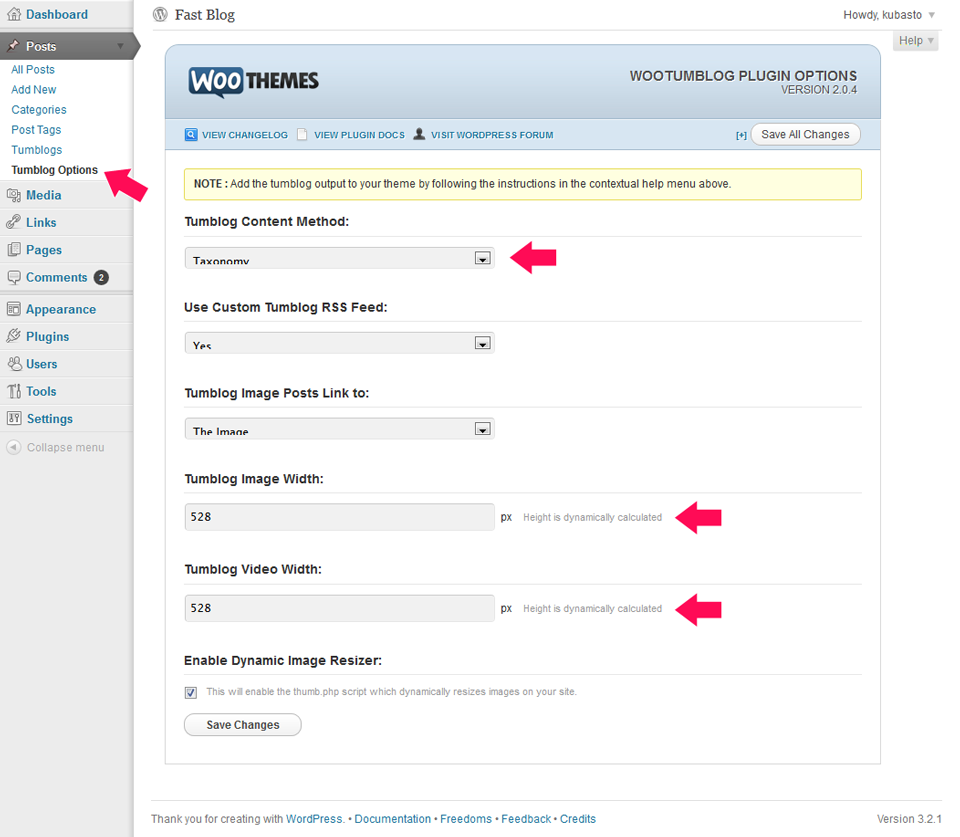
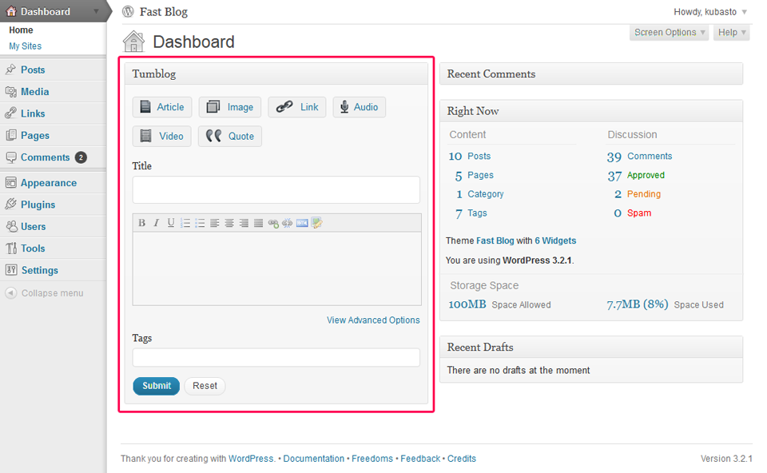
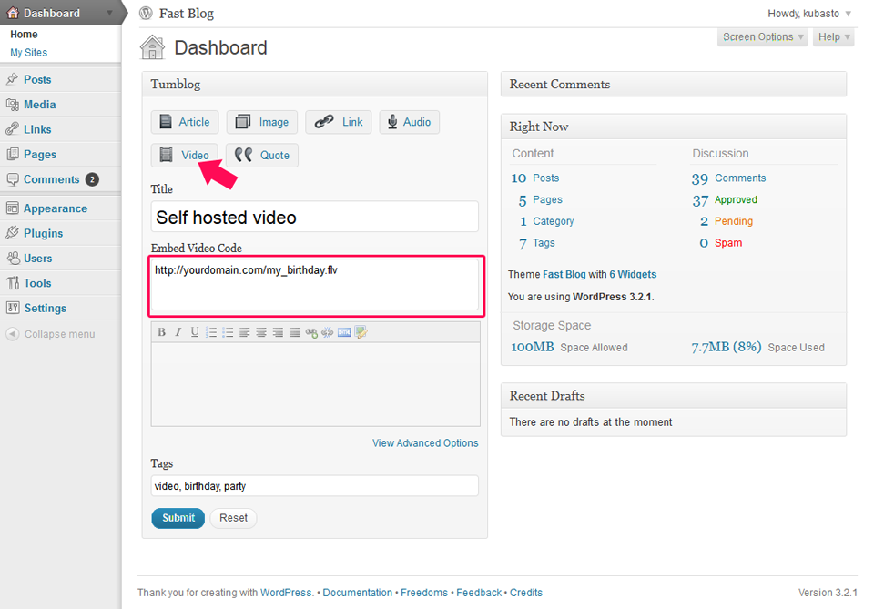
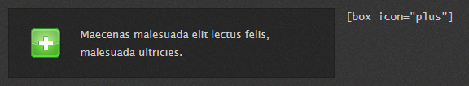
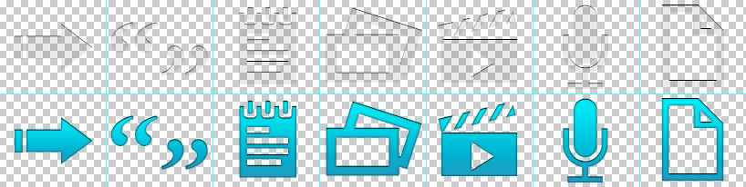
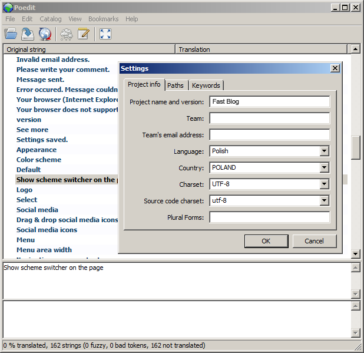

Version: 1.5
Created: 22 December 2011
Website: http://themeforest.net/item/fast-blog/145138/
Demo: http://themes.kubasto.com/fastblog/
Fast Blog is a WordPress theme with some extra tumblr-like features. To take full advantage of it you need to install WooTumblog plugin (it's included). It's perfect for easy blogging and thanks to the plugin you can add posts quickly even from a mobile phone. There are 6 types of posts:
or you can create regular WordPress posts and pages too.
If you want to manage your site from iPhone, I recommend Express for WordPress - dedicated application for WooTumblog.
Upload the contents of the fastblog folder to the /wp-content/themes folder on your server.
Activate the theme through the Appearance / Themes menu in WordPress.
Open the theme configuration page and set up theme options.
To install the WooTumblog plugin upload the contents of the woo-tumblog folder from the download package to the /wp-content/plugins folder on your server. You can also download newer version of WooTumblog plugin if avaliable.
Activate the plugin through the Plugins menu in WordPress.
After activating, configure settings it the Posts / Tumblog Options like on the image below:

Important note: After activating the theme, please go to Settings / Permalinks and click Save changes.
Enjoy your new theme!
The best way to create all kinds of post is by the Tumblog panel on the Dashboard. It's very intuitive, have a look:

If you want to use video from YouTube, vimeo or other video services, just paste the embedding code generated on theses services into Embedded Video Code filed on the Video type post.
If you want to use self-hosted FLV video, or from some reason you want to use built-in player, paste link to the video file (if you want to use a preview image, set it as a featured image for this post). JWPlayer will be used to display this video.

If you are not familiar with shortcodes, these are extra magic spells to use in text which can for example add a special icon or text box. You just start with opening shortcode, put some text or other stuff inside and write closing shotrcode on the end. To use shortcodes while post / page editing just write opening shortcode e.g. [box icon="plus"], inside text, and closing shortcode: [/box]. Line shortcodes doesn't need to be closed. shortcode:

There are 4 shortcodes with lots of paramets:
| Shortcode | Parameter | Allowed values | Default value |
|---|---|---|---|
line, hr |
|||
cufon |
size | [size] | |
| class | [css class] | ||
| style | [css style] | ||
box |
icon | none, address-book, arrow-back-red, arrow-back, arrow-red, arrow, bookmark, briefcase, chat, checkmark, clock, config, database-add, database-warning, database-x, database, exclamation, folder-add, folder-remove, folder, graph, heart-add, heart-x, heart, home, info, lifesaver, list, mail-add, mail-spam, mail-x, mail, mail_forward, mail_reply, music, no, paper-add, paper-arrow-back, paper-arrow, paper-pencil, paper-warning, paper-x, paper, pencil, person-add-black, person-add, person-black, person-group-add, person-group-warning, person-group-x, person-group, person-warning-black, person-warning, person-white-add, person-white-warning, person-white-x, person-white, person-x-black, person-x-white, person-x, person, photo, piechart, plus, questions, refresh, rss, screen, search, speech-bubble-add, speech-bubble-x, speech-bubble, warning, world-download, world-search, world, x | none |
| align | left, right | left | |
column |
type | [number]/[number] | |
| count | [number] | 2 | |
| colspan | [number] | 1 | |
| last | last, yes, 1 |
You can preview all icons in the /images/icons/ folder. You can also add new icons (48x48px) there – they will work the same way as all, just use their name as parameters value.
If you want to learn more how to use shortcodes and watch examples, check them online on the Fast Blog demo.
Structure of the site by sections, id's and classes.
allow_url_fopen).Paste the following code to the Custom CSS filed in Theme Options:
.post .post-icon { display: none; }
.tumblog .post { padding-left: 20px; }
In the Posts / Categories section Add new Category,
Extend file schemes/[SCHEME]/images/post-icon.png with a new icon (+117px width).
Edit file style.css (or add code to Custom CSS field in the Theme options / Advanced):
.post.category-slug .post-icon.custom { background-position: -819px 0; }
.post.category-slug .post-icon.custom a { background-position: -819px -103px; }
where the first number means new icon's X position and the second number – Y position in the post-icon.png file. Icon's size should be 117px x 103px, so if you add new icons, the first new one should have X position -819px, next one -936px, next one -1053px etc... There are Photoshop PSD files included to make icons editing easier. Remember to replace slug with the proper slug name.
Edit file /schemes/[SCHEME]/images/post-icon.png (add new icons on the right). There are Photoshop PSD files included in the /psd folder to make it easier.

Generate Cufón font and upload it to the /js/fonts/ folder. Now you can select it in the Theme Options / Advanced / Cufón custom font.
Probably your server has allow_url_fopen parameter switched off. Ask your hosting provider to turn it on, or try to do it by yourself (although it might not work): create file .htaccess on your server and paste following code inside it:
phpvalue allowurl_fopen 1
In the Posts / Tumblogs section, edit chosen category and put translated name into the name field. Do not change the slug field.
Go to Settings / Permalinks and click Save Changes (don't change any settings).
Select Contact form as a template when you create or edit page.
In the NextGen Gallery settings (Gallery / Options / Effects) select Custom for JavaScript Thumbnail effect and in the Link Code line paste:
class="fancybox"
Add fancybox class to the image's hyperlink, e.g:
<a href="big_image.jpg" class="fancybox">
<img src="small_image.jpg" />
</a>
If more then one links inside the same widget will have that class, Fancybox gallery containing those images will be created automatically.
The best method would be: upload all files to your server, replacing the old ones. No data nor settings will be lost (unless you've made some custom changes to the files by yourself before).
Try to uncheck Enable Dynamic Image Resizer option in Posts / Tumblog Options.
It’s probably because the audio file has a variable bitrate, and the old JWPlayer (which is included to the WooTumlog) doesn't deal with that very well.
You can easily update the player:
player.swf file and upload it to the \wp-content\plugins\woo-tumblog\functions folder on your server (replace the old one).There is a conflict between Disqus and WooTumblog. To fix it, you will have to modify the code of one of the plugins. Replace line 667 of the /wp-content/plugins/disqus-comment-system/disqus.php file:
add_action('wp_head','dsq_get_style');
with this:
add_action('wp_head','dsq_get_style', 20);
I don't know why Disqus override WooTumblog wp_head action, but this modification solves the problem.
You can set their size in: Posts / Tumblog Options / Tumblog Image Width.
For translations I recommend Poedit tool.
Create a copy of the xx_XX.po file (from /languages) and rename it respectively to your language (check proper name here. For example Swiss German would be de_CH.po).

It seems a little harsh, but this is the proper way. If you need more details, check here.
There is a lot of layered and sliced Photoshop .psd files prepared for you in the /psd folder. Some of them are common for all theme color versions and some are specific just for one and placed in the suitable folders.
External resources used:
WooTumblog
jQuery
Cufón
FancyBox
Vector Social Media Icons by IconDock.com
Elegant Icons Created by Nicholas Roach
League-gothic font
Myriad Pro font of Adobe
Franchise font
Pincoyablack font
Sansation font
Vegur font
Fast Blog 1.5
Fast Blog 1.4
[box] without any icon shortcodeFast Blog 1.3
[cufon]Fast Blog 1.2.1
Fast Blog 1.2
Fast Blog 1.1
Fast Blog 1.0
for purchasing this theme. If you have further questions don't hesitate to ask. The best way to contact me is the contact form on my profile page.
Kuba Sto